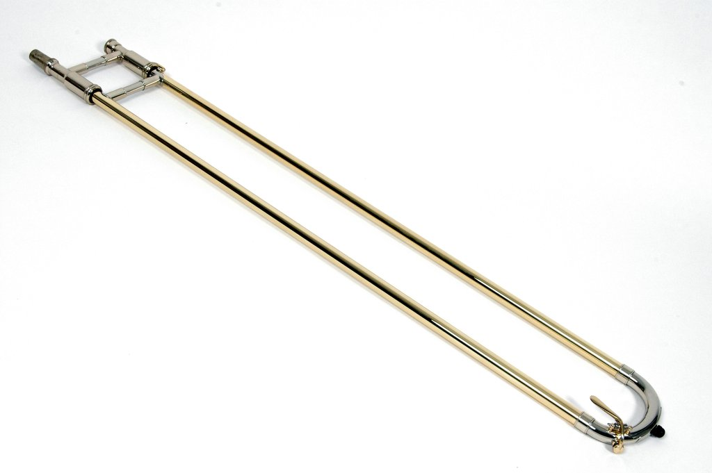

Trumbones

Features
Chrome Slides

The trombone Slide is the most important part of the trombone. The quality of the Slide directly
determines whether the whole trombone is used smoothly. Poor quality Slides are easy to deform
and oxidize, and are easy to get stuck in the process of practice.
Origano inner Slide adopts brass chrome plating process, with higher hardness, higher brightness, more wear resistance and also, faster reaction speed when playing.
Origano inner Slide adopts brass chrome plating process, with higher hardness, higher brightness, more wear resistance and also, faster reaction speed when playing.
Cleaning kit & Case

a) Along with Origano Trumbones you can also by the fine cleaning tool kit with additional
discounts.
Long brushes can clean stains in U-shaped tubes. The short brush can clean the stains in the mouthpiece and short pipe. Oil can lubricate the slices (professional slide oil is recommended for higher maintenance). Joint grease plays a role in lubricating and sealing the necessary interfaces.
b) Origano's hard case provides good supporting for musicians to keep their trombones or go out to perform.
The case is made of light foam wrapped by light wood splint has certain shock resistance and water resistance.
Long brushes can clean stains in U-shaped tubes. The short brush can clean the stains in the mouthpiece and short pipe. Oil can lubricate the slices (professional slide oil is recommended for higher maintenance). Joint grease plays a role in lubricating and sealing the necessary interfaces.
b) Origano's hard case provides good supporting for musicians to keep their trombones or go out to perform.
The case is made of light foam wrapped by light wood splint has certain shock resistance and water resistance.
Fine Delivery
.png)
We make sure you recieve your trombone as soon as we have finished making it. We also provide
free returns if you are not satisfied.
The products which are delivered are taken at most care in order to aviod the damages that happen to the Trumbones during the transportation. If you are not statisfied with our delivery service please try to communicate to our customer care through: origano.customer@gmail.com
The products which are delivered are taken at most care in order to aviod the damages that happen to the Trumbones during the transportation. If you are not statisfied with our delivery service please try to communicate to our customer care through: origano.customer@gmail.com